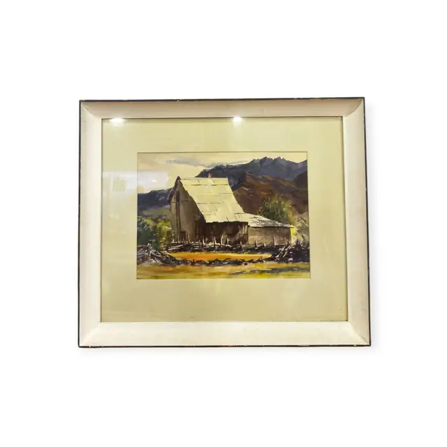
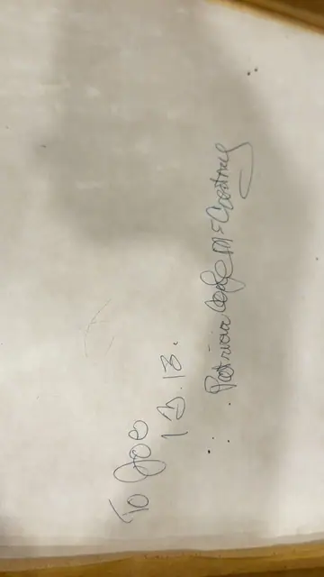
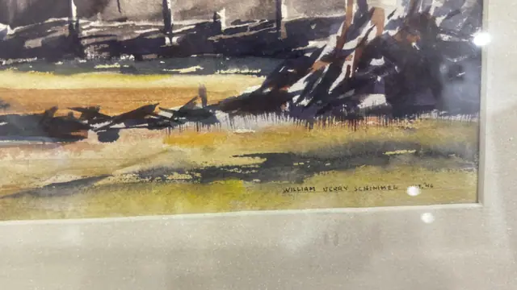
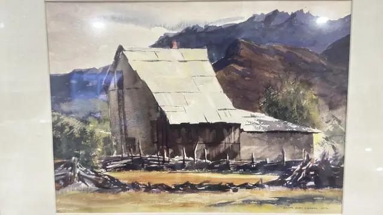

Paintings & Prints
Desert Barn Beneath Blue Mountains, William Perry Schimmel, Signed, Framed
William Perry Schimmel · mid to late 20th century
Price Upon Request




About the Item
William Perry Schimmel. A confident plein-air watercolour. A long grey barn with a bright tin roof sits low against violet-blue mountains, its shadowed timbers rendered in single loaded strokes. The foreground is a band of ochre grass with scattered brushwood, and the sky is left almost bare. Signed in the image at the lower right. Presented in a plain white painted frame with a cream mat. Medium: watercolour on paper. Signed lower right, within the image, reading "WILLIAM PERRY SCHIMMEL". Inscribed on the reverse or mount: pencil dedication on the backing board reading in part To Deb and Bob ... Christmas. Condition: clean sheet; slight cockling under the mat.
About the Artist
The signature is generally identified with William Berry Schimmel (1906-1986), an American watercolourist born in Olean, New York, who worked as a New York advertising art director before settling in Arizona. He became a noted painter and teacher of Arizona desert landscapes and founded the Schimmel School of Watercolor in Scottsdale.
Details
- Creator:
- William Perry Schimmel
- Creation Year:
- mid to late 20th century
- Medium:
- watercolour on paper
- Period:
- 20Th
- Condition:
- Offered in the condition shown in the photographs.
- Reference Number:
- VO-234
- Documentation:
- none seen
- Gallery Location:
- pencil dedication on the backing board reading in part To Deb and Bob ... Christmas